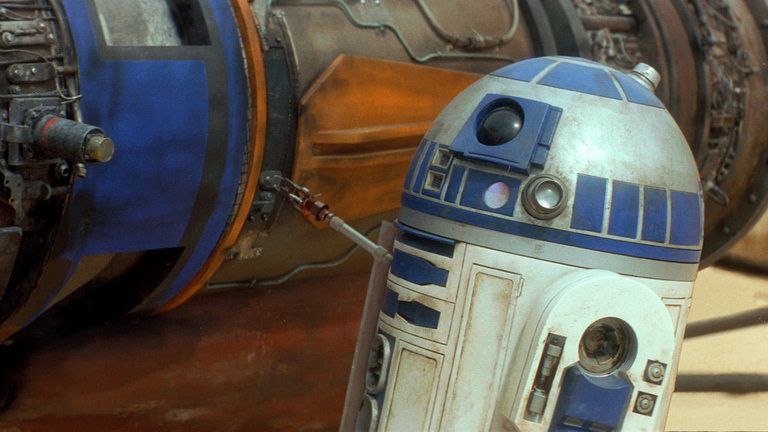
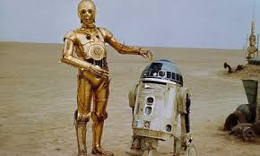
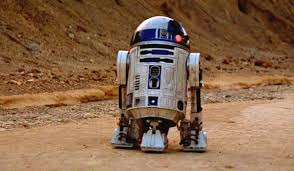

R2-D2
Anakin Skywalker and Luke Skywalker in turn, showing great bravery in rescuing his masters and their friends from many perils. A skilled starship mechanic and fighter pilot's assistant, he formed an unlikely but enduring friendship with the fussy protocol droid C-3PO.- Photo 1
 Photo 2
Photo 2- Photo 3

BB-8
A skittish but loyal astromech, BB-8 accompanied Poe Dameron on many missions for the Resistance, helping keep his X-wing in working order. When Poe’s mission to Jakku ended with his capture by the First Order, BB-8 fled into the desert with a vital clue to the location of Jedi Master Luke Skywalker. Photo 1
Photo 1 Photo 2
Photo 2 Photo 3
Photo 3

R5-D4
A red astromech droid, R5-D4 thought he'd found a home when the Jawas sold him to Owen Lars, along with the protocol droid C-3PO. But R5's motivator blew as he rolled away from the sandcrawler, forcing the Jawas to take him back in exchange for R2-D2. Photo 1
Photo 1 Photo 2
Photo 2